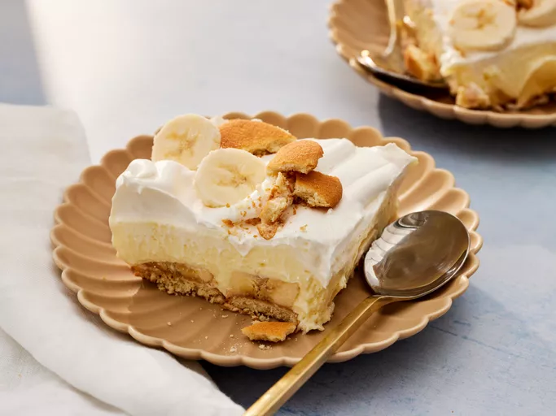

Sushi

Banana Pudding
Homemade salmon roll made with sushi rice, nori, and smoked salmon. This is a very basic and easy recipe for making sushi. It might take a while to learn how to make a perfect roll, but you'll have fun trying! Add wasabi (Japanese horseradish) for a good kick!
- 1 (8 ounce) package cream cheese, at room temperature
- 1 (14 ounce) can sweetened condensed milk
- 1 (5 ounce) package instant vanilla pudding mix
- 3 cups cold skim milk
- 1 teaspoon vanilla extract
- 1 (8 ounce) container frozen whipped topping, thawed
- ½ (12 ounce) package vanilla wafers
- 4 bananas, sliced
- Step 1 - Gather all ingredients
- Step 2 - Beat cream cheese in a large bowl until fluffy. Beat in condensed milk, then pudding mix. Gradually mix in cold milk until smooth, followed by vanilla.
- Step 3 - Fold in 1/2 of the whipped topping.
- Step 4 - Line the bottom of a 9x13-inch dish with vanilla wafers.
- Step 4 - Arrange sliced bananas evenly on top.
- Step 5 - Cover with pudding mixture.
- Step 6 - Top with remaining whipped topping.
- Step 7 - Cover and chill in the refrigerator for at least 3 hours before serving.